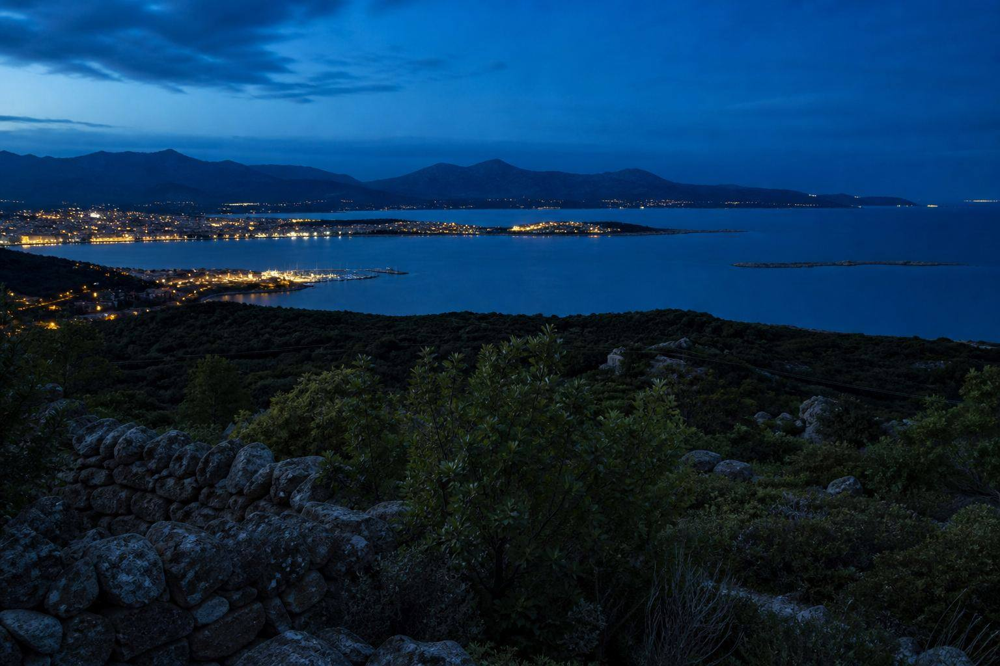
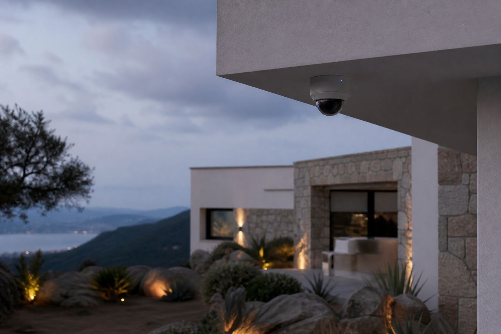
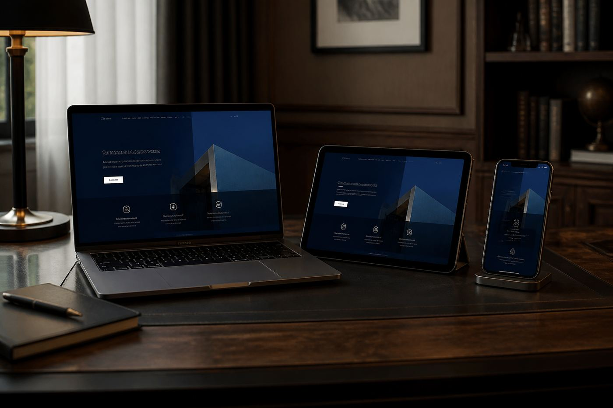

Vidéosurveillance
Résidence secondaire
Consultation à distance d'une maison inoccupée une partie de l'année, dans le secteur de Porto-Vecchio.

Bienvenue
Je peux expliquer les services InfoServ2A, trouver la bonne rubrique et naviguer avec vous. Vous gardez toujours la main.
Le microphone n’est activé qu’après votre action. Le mode local n’envoie aucune conversation à un serveur.
Porto-Vecchio · Corse-du-Sud
Vidéosurveillance, sites web et assistance à Porto-Vecchio, de Solenzara à Bonifacio. Devis gratuit, sans engagement.

Offres
Choisissez le besoin, pas un catalogue de six intitulés. Chaque prestation est étudiée sur place ou à distance, selon le contexte.

Sécurité
Caméras, sites isolés, audit NIS 2 et protection des outils numériques.
Voir l'offre
Présence web
Site vitrine, hébergement, maintenance et modifications par un prestataire local.
Voir l'offreAssistance
Dépannage à distance, configuration à domicile et récupération de supports.
Voir l'offrePortfolio
Quelques interventions représentatives, présentées sans nommer les clients ni exposer d'informations sensibles.
Consultation à distance d'une maison inoccupée une partie de l'année, dans le secteur de Porto-Vecchio.

Pages d'information, formulaire et hébergement pris en charge à Porto-Vecchio.

Surveillance des abords et des accès, avec consultation depuis un smartphone.
Questions fréquentes
Oui, notamment autour de Porto-Vecchio et plus largement de Solenzara à Bonifacio selon la prestation.
Oui. Certaines solutions, notamment de vidéosurveillance, peuvent fonctionner grâce aux réseaux 4G/5G.
Oui. Les devis sont gratuits et sans engagement.
Décrivez le besoin : une proposition claire, sans engagement.